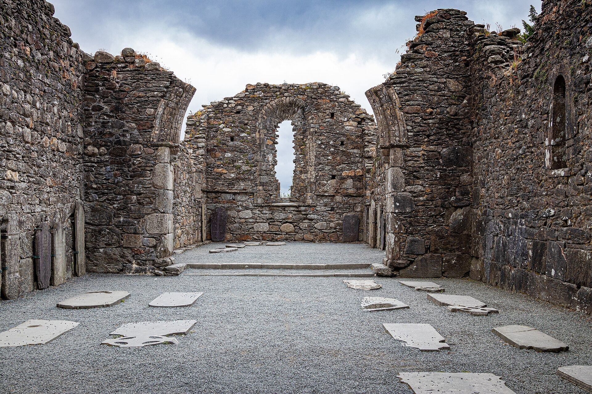
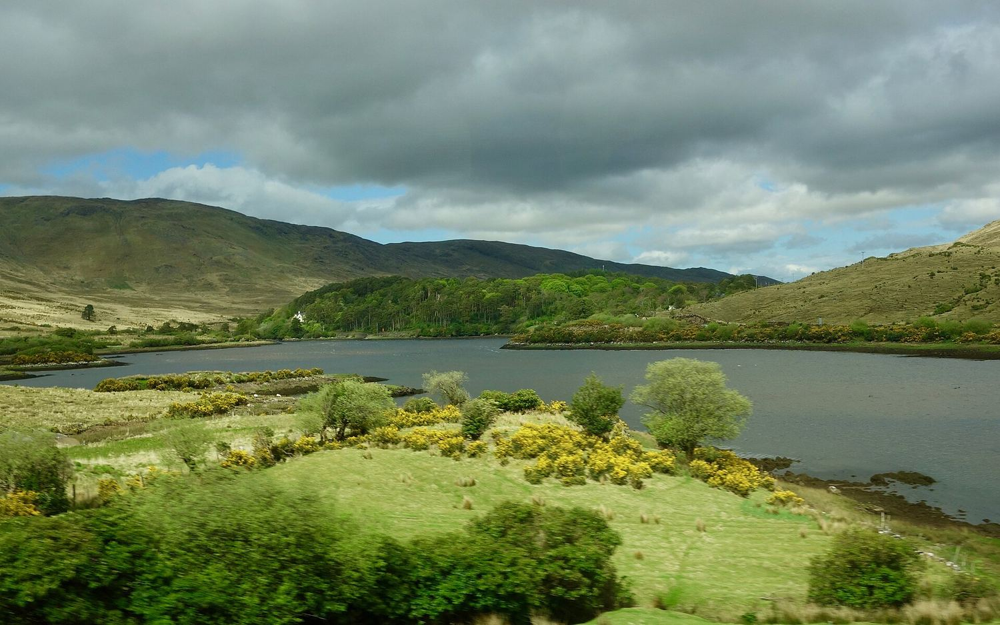
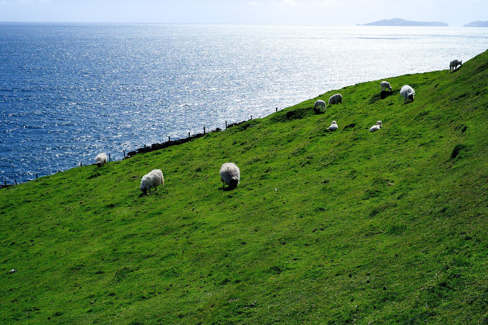
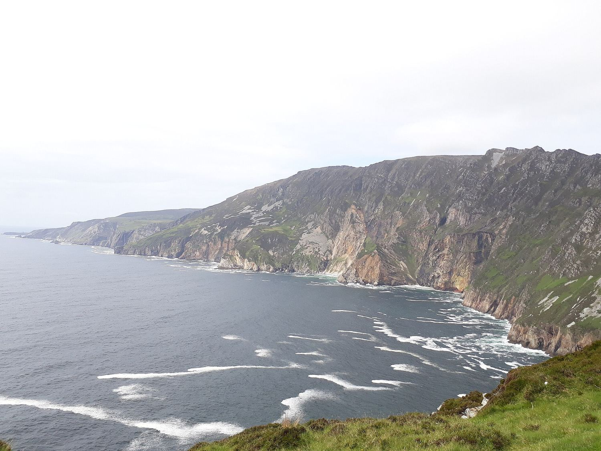
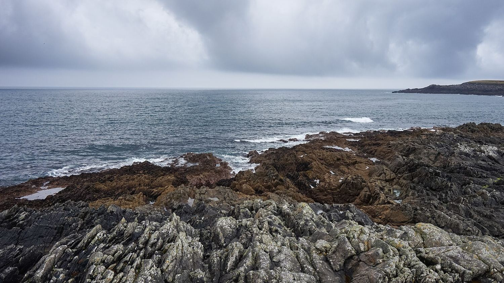
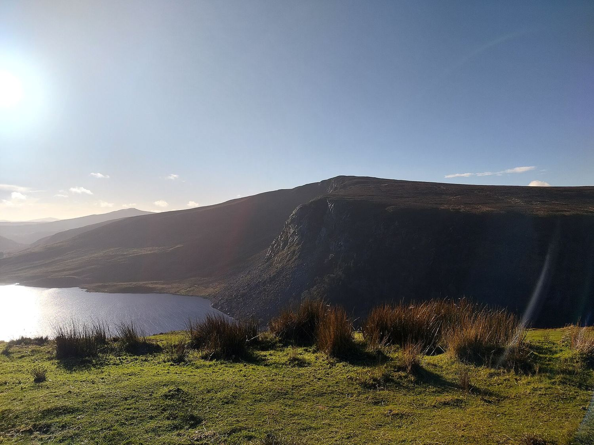

Сам остров
Природа
Атлантические скалы, ледниковые долины, торфяники и камень. Ирландия невелика, но её края драматичны — и почти всю её можно пройти пешком.
10 мест

Графство Клэр
Скалы Мохер
Восемь километров отвесного края Атлантики

Графство Керри
Кольцо Керри
Классический маршрут Ирландии — 179 километров

Графство Антрим
Дорога гигантов
Сорок тысяч базальтовых колонн, уходящих в море

Графство Уиклоу
Глендалох
Ледниковая долина с двумя озёрами и монастырским городом

Графство Голуэй
Коннемара
Болота, гранит и вода, и ирландский язык каждый день

Графство Керри
Полуостров Дингл
Самая западная точка Ирландии

Графство Донегол
Слив-Лиг
Почти шестьсот метров отвесно вниз

Графство Антрим
Каррик-а-Рид
Верёвочный мост и остров лососёвого рыбака

Графство Мейо
Остров Акилл
Крупнейший остров Ирландии и его самый пустой пляж

Графство Уиклоу
Озеро Тей
«Озеро Гиннесса»: тёмная вода над светлым песком